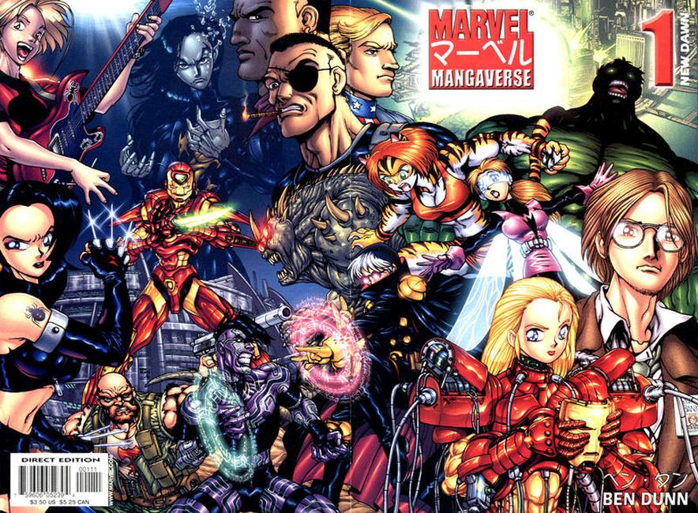
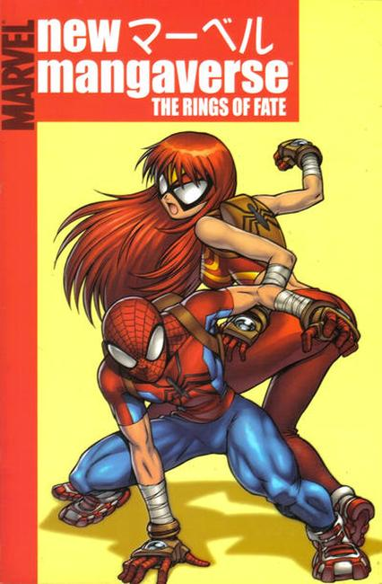

The Marvel Mangaverse is a series of comic books published by Marvel Comics from 2000 to 2002, with a sequel "New Mangaverse" released in late 2005 and early 2006.
The series depicts an alternate (or possibly two alternates, see below) Marvel universe, its characters drawn and portrayed in a manga-like style. Four volumes were published for the series, two of which were connected by a continuing story arc with multiple Marvel characters, while the third and fourth series each started a new story and focused on a single character, which were Spider-Man Mangaverse and Jean Grey of an alternate version (apparently) of X-Men Mangaverse.

By 2005, Official Handbook to the Marvel Universe: Alternate Universes 2005 has given the numerical designation of "Marvel Mangaverse" as Earth-2301. The majority of the artwork in the first volume was shared between different artists, each of whom delivered one issue, with book-ends by Ben Dunn, whose work is best known on the comic series Ninja High School. Dunn also did the entirety of the artwork for volume 2 of Mangaverse.
The artwork for the five issue miniseries New Mangaverse: The Rings of Fate was done by Tommy Ohtsuka.
